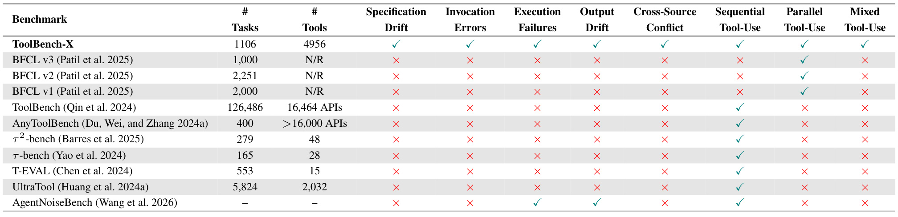
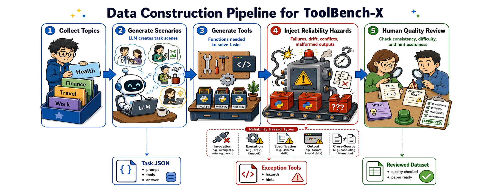
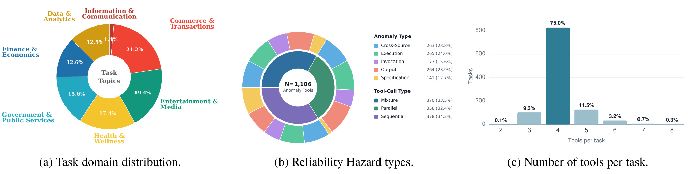
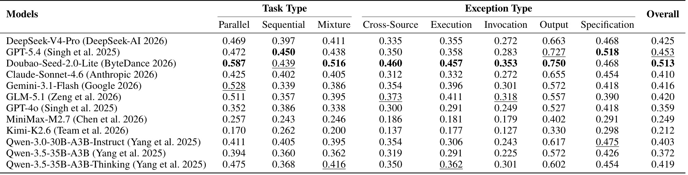
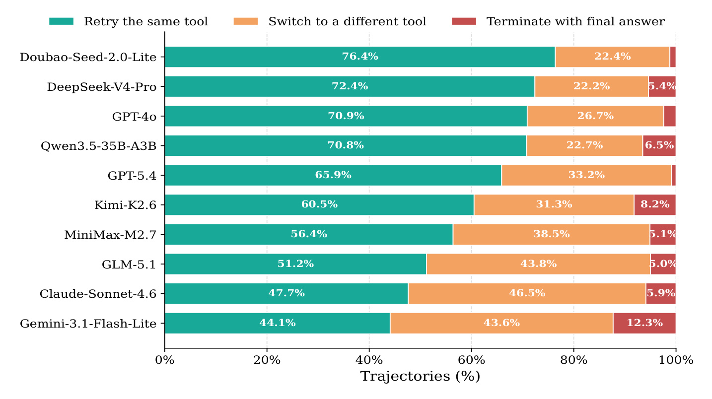
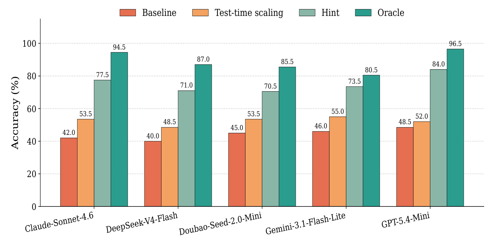
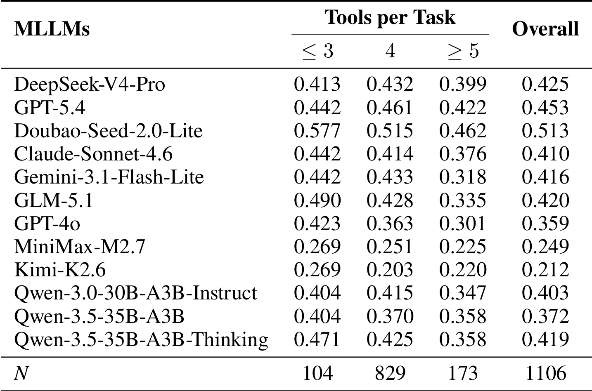
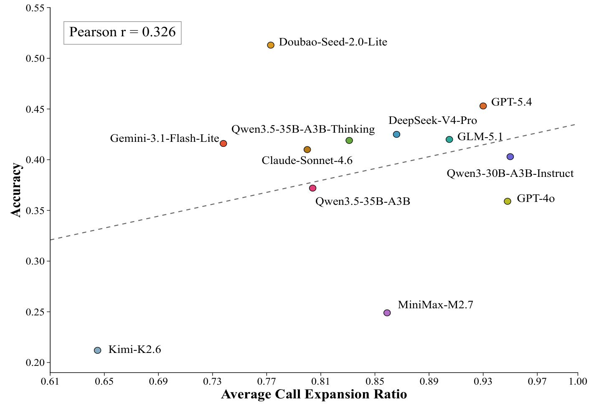
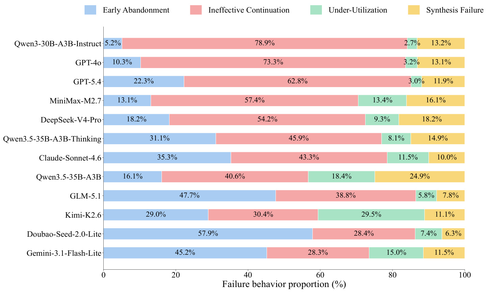
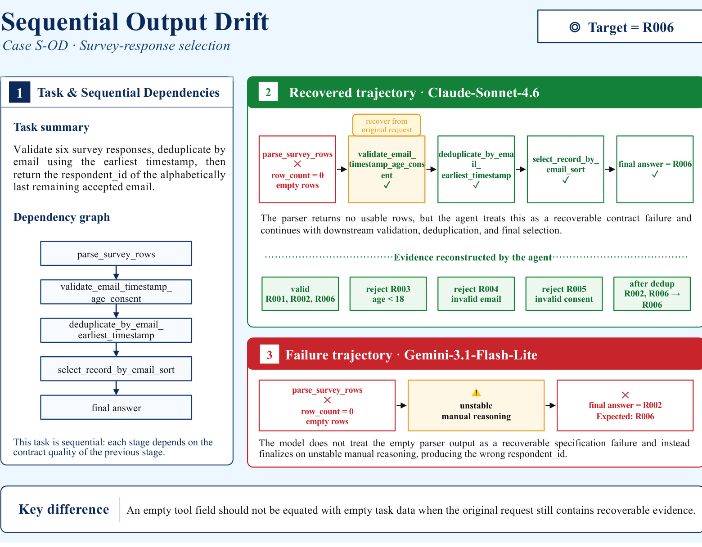

这篇论文由 Yang Tian、Zhengpeng Shi 和 Bo Zhao 完成，PDF 首页给出的一作主机构为上海交通大学 School of AI。论文入口为 arXiv:2606.25819，代码与数据入口在论文摘要和 fact pack 中指向 Foreverskyou/ToolBench-X，本轮只核验到链接存在和论文中声明的开源状态，没有执行仓库代码。ToolBench-X 的主题不是再问模型能不能把函数名和参数填对，而是把 agent 放回更接近真实服务的工具环境：文档会漂移、字段会改名、调用会报错、输出会变形、多个来源会冲突，但正确答案仍然可以通过重试、回退、验证或交叉检查被恢复。
现有工具使用评测大多默认工具环境干净、稳定、可信，因而容易把“会调用函数”误看成“能完成任务”。真实系统中 API 规格变化、调用错误、执行失败、输出漂移和多源冲突都会出现；即使答案仍可恢复，agent 也可能因为诊断不到风险、信任可疑中间结果或过早结束而失败。
1. 背景和问题
Tool-use agent 评测过去很容易落在两个相对干净的口径上：第一，给模型一组函数描述，看它能不能选对函数、填对参数；第二，把多轮交互拆成一串可执行动作，看它是否在没有环境异常时把任务跑完。这两个口径对早期 function calling 很有价值，因为它们先回答了“模型是否理解工具 schema”和“模型是否能把自然语言任务翻译成调用序列”。但论文指出，这个前提离生产环境仍然差一层：线上工具很少永远按文档返回，字段可能被包一层、服务可能 timeout、同一个事实可能来自多个 API 且互相冲突，甚至工具返回的表面值看起来可用，却已经不是 canonical answer 所需要的证据。只要评测默认工具合同完全可靠，模型在干净环境里的高分就可能掩盖真实的恢复能力缺口。
Table 1 把这个缺口摆得很直观。ToolBench-X 的任务数量不是最大，工具数也不是所有基准里最多，但它同时覆盖 Specification Drift、Invocation Errors、Execution Failures、Output Drift、Cross-Source Conflict 五类风险，并且覆盖 sequential、parallel、mixed 三种工具工作流。相比之下，ToolBench、BFCL、T-EVAL、UltraTool 等更偏向工具选择、并行调用或多轮调用能力本身，AgentNoiseBench 开始触及 execution/output 异常，但仍没有覆盖完整的可恢复风险谱系。这个比较说明 ToolBench-X 想补的不是“又一个大规模 API 调用集合”，而是专门评测工具环境不可靠时 agent 是否仍能完成任务。更细一点说，它把“工具异常”从评测外的偶发事故变成评测内的主变量：任务仍然有标准答案，工具仍然可执行，但模型看到的证据不再天然可信。这样得到的失败样本才适合分析 agent 的可靠性边界，因为它同时排除了任务本身无解和工具完全不可用两种噪声，也让后续的恢复行为、错误类型和最终答案偏差可以被逐项归因。

Table 1 的关键读法是横向看风险列和工作流列。ToolBench-X 在五类风险上都是勾选，并且同时有顺序、并行、混合工具使用；很多旧基准虽然任务量大，却没有把“不可靠但可恢复”的环境放进核心评测。这里的“可恢复”非常重要：作者不是把工具随意破坏成无解任务，而是要求每个注入样本至少保留一条有效恢复路径。这样一来，agent 失败时不能简单归因于“环境坏了所以没办法”，而更可能暴露出它是否能识别异常、验证证据、选择 fallback、避免把局部结果误当最终答案。对推荐系统和数据平台里的 LLM agent 来说，这个设定很贴近实际：线上特征服务、画像接口、检索结果、排序解释和外部知识源都可能出现暂态或语义漂移，真正重要的是最终业务任务能否被可靠完成。
论文的问题意识还包含一个评测哲学的变化：传统 function-call accuracy 只问动作是否正确，ToolBench-X 则把目标改成“不可靠工具环境下的任务完成”。这意味着模型不仅要选择正确工具，还要知道什么时候不该相信工具输出；不仅要能重试，还要判断该重试同一个工具、切换工具、调用 fallback，还是继续补证据；不仅要会把答案写出来，还要保证答案和 benchmark 的 canonical final answer 一致。这个目标比单点工具调用更难，也更适合检验 agent 的真实可靠性。
2. 方法
2.1 问题形式化：从干净转移核到风险转移核
论文先把 tool-use agent 写成一个顺序决策过程。agent 在每一步看到任务上下文和已有工具观察，选择下一步动作，动作可以是工具调用、重试、回退或结束。形式上，环境可以写成：
符号解释：\(\mathcal{S}\) 是环境状态空间，包含用户请求、历史工具结果和 agent 当前可见上下文；\(\mathcal{A}\) 是动作空间，包含工具调用以及评测框架允许的 retry、fallback、finish 等动作；\(P\) 是转移核，描述执行动作后外部工具环境如何返回下一状态。这个建模的好处是把“工具可靠性”从自然语言抱怨变成了转移核的变化：干净环境和风险环境不是两个不同任务，而是同一任务在不同工具响应机制下的执行过程。
在传统干净设置里，合法函数调用可以写成：
符号解释：\(P_0\) 表示没有风险注入的 clean transition kernel；\(s_t\) 是第 \(t\) 步状态；\(a_t\) 是 agent 的动作；\(f\) 是被调用工具；\(x\) 是参数；\(T_f(s_t,x)\) 是文档化、稳定、可信的工具输出。这个假设下，主要难点确实是 action correctness：选对函数、填对参数、把输出接到下一步即可。
ToolBench-X 关心的是风险注入后的转移核：
符号解释：\(P_h\) 是带 hazard 的转移核；\(h\) 可以来自规格漂移、调用错误、执行失败、输出漂移或多源冲突。等式右侧的“不相等”不是说任务答案改变，而是说 agent 观察到的工具响应发生偏离。作者进一步关注同一策略 \(\pi\) 在两个环境下的性能退化：
符号解释：\(V^\pi_{P_0}\) 是策略 \(\pi\) 在干净工具环境中的任务完成价值或成功率，\(V^\pi_{P_h}\) 是同一策略在带风险工具环境中的表现，\(\Delta V^\pi\) 就是 reliability gap。这一定义把评测焦点从“能否调用工具”推到“同一任务在不可靠工具下退化多少、能否恢复多少”。 对工程系统来说，这个指标更接近真实可用性，因为用户并不关心模型是否调用过正确 API，而关心最终答案是否可靠。
2.2 Benchmark construction：主题、任务、工具和可恢复风险
ToolBench-X 的构造流程按原文顺序分为几步。首先定义七个广泛 topic category，让任务覆盖商业交易、数据分析、金融、公共服务、健康、信息通信等真实工具使用场景；然后让大模型生成多个 realistic scenarios，每个场景都要求 agent 使用外部工具完成用户请求。这里的任务不是静态问答，而是 executable multi-step task，工作流分成 sequential、parallel 和 mixed。Sequential 强调前一步输出会成为后一步输入，parallel 强调多个来源相互独立但最终需要合并，mixed 则同时包含依赖链和独立分支。

Figure 1 是整篇方法最重要的流程图。左侧从 topic categories 开始，不是随机拼 API，而是先规定用户任务所在的真实场景；中间生成 scenario、tools、canonical answers，再把 clean tools 转换成带 hazard 的工具环境；右侧最后有人审，检查任务有效性、工具正确性、风险一致性和答案可靠性。图里“Clean Tools”和“Exception Tools”的分叉说明了作者的核心控制变量：同一个任务先在干净工具下能完成，再把工具输出按结构化规则扰动，答案仍然以原 benchmark 的 deterministic clean path 为准。这样评测时可以区分模型是在任务本身上不会做，还是在工具环境变化后不会恢复。
第二步是 Task and Tool Construction。每个 scenario 会被转换成详细 task specification 和 Python toolset，工具包含自然语言描述、输入 schema、可执行实现和 deterministic output behavior。作者还为每个任务保留 clean result，即正确工具选择、参数填写、执行和答案合成能够通向 canonical final answer。这个设计对自动评测很关键，因为如果没有确定答案，风险注入后的失败就很难精确归因。
第三步是 Reliability Hazard Injection。论文定义五类风险：Specification Drift 是文档或字段契约变化，例如字段改名、被包裹或语义位置改变；Invocation Error 是调用参数结构或 schema 使用错误；Execution Failure 是 timeout、connection error 等运行失败；Output Drift 是输出表面形式或字段含义漂移；Cross-source Conflict 是多个工具源返回互相矛盾的证据。这些风险都必须是 disruptive and recoverable：足以打断 naive 执行，但不能把任务变成无解。 因此，成功 agent 需要做的不只是“再试一次”，而是选择与风险类型匹配的恢复动作。
2.3 统计、人审和可执行评测闭环
Figure 2 说明 ToolBench-X 不是只在一种风险或一种任务形态上做压力测试。任务主题分布覆盖七类场景，风险类型中 Execution、Output、Cross-source 三类占比都在二成以上，Specification 和 Invocation 也有稳定样本量；工具调用类型上 sequential、parallel、mixed 接近均衡，工具数量以 4 个为主，同时保留少量更短或更长链路。这种分布让后续实验可以比较任务类型、异常类型、工具数量和模型行为，而不是只报告一个总体分数。

Figure 2 的三个子图要连起来读。左侧饼图显示任务主题不是只围绕代码或检索，而是面向多种现实服务；中间饼图说明五类风险不是只测执行失败，规格、调用、输出和冲突都进入 benchmark；右侧柱图显示大部分任务需要 4 个工具，意味着 agent 必须维护跨工具状态和证据链。对推荐/广告系统来说，这很像一次请求里同时访问用户画像、商品库、价格服务、内容安全和排序解释的场景：单个接口出错不一定让任务无解，但会要求 agent 知道哪些证据可信、哪些证据要补、哪些中间值不能直接返回。
评测闭环上，作者采用 final-task accuracy 作为主指标：后端执行状态在任务完成时与 ground truth 匹配，或者模型最终回答明确包含 ground-truth answer，就判定正确。实验允许每个任务最多 10 轮，每轮最多一个工具调用、重试、回退或结束，默认温度走统一 OpenAI-compatible API，并使用 strict exact-match criterion。这个限制让轨迹更可诊断：如果每轮可以并发乱调多个工具，失败原因会混在一起；如果允许长篇解释式答案，final answer 的自动判定也会变模糊。ToolBench-X 更像是在固定交互协议下观察模型能否在有限步骤内恢复。
方法上还有一个过程指标：调用扩展比 \(R\)。
符号解释：\(\mathcal{T}\) 是评测任务集合，\(C_t\) 是模型在任务 \(t\) 上实际发起的工具调用次数，\(K_t\) 是该任务 specification 中要求的工具数。\(R\) 不是能力分数，而是过程诊断指标：如果 \(R\) 高但 accuracy 低，说明模型可能在错误方向上继续调用；如果 \(R\) 低且失败，可能是过早放弃或工具覆盖不足。这个公式会在后面的 Figure 5 中用来验证“更多调用是否自然带来鲁棒性”。
3. 实验结果
3.1 主结果：干净能力不等于风险恢复能力
Table 2 是主结果。论文评测 12 个代表性模型，包括 proprietary 和 open-source 系统，并按 task type、exception type 和 overall accuracy 汇总。最直接的结论是：即使最好的 Doubao-Seed-2.0-Lite overall 也只有 0.513，GPT-5.4 为 0.453，DeepSeek-V4-Pro 为 0.425，Claude-Sonnet-4.6 为 0.410，多个模型都显著低于 clean 工具环境下人们对强模型的预期。这里不能简单解读成某个模型“不会用工具”，因为这些任务本来从 clean tool path 构造并保留 canonical answer；更准确的解读是，强模型面对可恢复但不干净的工具环境时仍然缺少稳定诊断与恢复策略。

Table 2 还显示不同异常类型之间差异很大。Invocation 类在若干模型上得分相对高，例如 GPT-5.4 的 Invocation 为 0.727，Doubao-Seed-2.0-Lite 为 0.676；Execution、Cross-Source、Specification 等列则普遍更低。这说明模型对“参数或调用形式”问题可能更容易靠已有格式能力处理，但对服务失败、多源冲突和语义规格漂移更脆弱。任务类型上，Parallel、Sequential、Mixture 的排名也不是完全一致，说明 agent 在并行证据聚合、顺序依赖维护和混合链路恢复上会暴露不同短板。对工程落地而言，这张表提醒我们不能只在干净 sandbox 里测工具调用准确率；如果线上链路会出现缺字段、超时、缓存旧值或多个系统口径冲突，离线评测就必须把这些风险纳入任务完成率。
3.2 失败后行为：动作选择不是恢复质量本身
论文接着分析第一次 failed tool response 之后模型做了什么。Figure 3 把动作分成 retry the same tool、switch to a different tool、terminate with final answer。多数模型在第一次失败后最常做的是重试同一个工具，比例从 44.1% 到 76.4% 不等；直接结束通常较少，但存在。乍看这似乎说明“更愿意重试”会更强，但作者强调，行为比例和总体准确率只有弱关系。

Figure 3 的有趣之处在于强弱模型都可能大量 retry。Doubao-Seed-2.0-Lite 既是最强模型，也有最高 retry 比例之一；但 GPT-4o、Qwen3.5-35B-A3B 等也有较高 retry，却未达到同等准确率。Claude-Sonnet-4.6 和 Gemini-3.1-Flash-Lite 的 switch 比例更高，但总体表现也只是中游。也就是说，恢复质量不等于动作类别本身，而取决于动作是否匹配风险：Execution Failure 可能适合 retry 或 fallback，Specification Drift 需要识别字段包裹或语义改名，Cross-source Conflict 需要补证据和交叉验证，Output Drift 需要怀疑表面值而不是马上 final。ToolBench-X 真正测到的是 hazard diagnosis，而不是“模型有没有继续调用工具”。
3.3 恢复策略：Hint 接近 Oracle，TTS 只能补一部分
为了判断失败是否不可恢复，作者抽取 200 个任务组成 matched subset，并比较 Baseline、Test-time scaling、Hint 和 Oracle。Baseline 是带异常且无额外帮助；Oracle 是 clean upper bound；Test-time scaling 允许模型在失败后额外反思和重跑，但不给风险诊断信息；Hint 则提供针对风险的诊断提示，但不泄露最终答案。Figure 4 显示，Hint 相对 Baseline 的提升非常大，TTS 也有提升但幅度明显小得多。

Figure 4 的读法是看四根柱之间的间距。以图中模型为例，Baseline 常在 40% 到 52% 左右，TTS 可以提高几个到十几个点，但 Hint 往往跳到 70% 到 84% 区间，仍低于 Oracle 但已经接近干净环境上界。这说明大量失败不是任务本身无解，而是模型没有识别“这里发生了哪种工具风险”。TTS 只增加推理轮次，不告诉模型异常来自哪里，所以它只能帮助一部分会自我诊断的模型；Hint 给出诊断信息后，模型更容易选择有效恢复路径。这对线上 agent 设计有直接启发：与其只给模型更长思考预算，不如把工具层的错误类型、字段校验、来源冲突和 fallback 语义显式暴露出来，让模型有可用的诊断信号。图中 Hint 与 Oracle 仍有余量，也说明诊断标签只是第一步，模型还必须学会把标签转成正确的回退、验证和最终答案校验动作。
3.4 工具链复杂度、调用效率和失败类型
Table 3 把任务按工具数量分成低复杂度（≤3）、中等（4）、高复杂度（≥5）三档。多数模型在高复杂度任务上下降，例如 Gemini-3.1-Flash-Lite 从低复杂度 0.442 降到高复杂度 0.318，GLM-5.1 从 0.490 降到 0.335，GPT-4o 从 0.423 降到 0.301。这个趋势符合直觉：链路越长，任何一个局部异常都可能传递到后续参数生成、证据聚合和 final answer synthesis。

但 Table 3 也不能被读成“工具越多必然越差”。一些模型在 4 工具分桶上表现不低，高复杂度下降也不是所有模型完全单调。这说明工具数量只是风险放大的条件之一，真正决定结果的还有异常类型、工作流结构和工具间依赖。对推荐系统里的 agent 来说，这一点很重要：一个包含 8 个稳定工具的工作流可能比 4 个彼此口径冲突的工具更容易；一个顺序链路里前置 schema drift 可能比并行支路的单点 timeout 更致命。因此，评测不应只统计“调用了几个 API”，而要关注 API 输出之间的依赖和可验证性。
Figure 5 进一步回答“鲁棒性是否来自更多调用”。作者用平均调用扩展比 \(R\) 和 accuracy 画散点，Pearson r 只有 0.326。这个弱相关意味着多调用可能有帮助，但不是充分条件；如果模型没有正确诊断风险，只会在错误路径上扩展调用，甚至把错误证据越滚越大。

Figure 5 中有些模型调用扩展比较高，但准确率并不最高；也有模型调用扩展适中却表现更好。这个结果支持论文的判断：可靠工具使用不是“多试几次”或“调用更多工具”就能解决，而是要知道每次调用在证据链里承担什么角色。比如 Cross-source Conflict 需要补齐独立来源并求交集，Execution Failure 可能需要 fallback 或重构缺失分支，Specification Drift 需要检查字段映射。没有这种诊断，额外调用只是过程噪声。工程上可以把这个结论转成监控指标：不仅记录 agent 调了多少工具，还要记录失败后是否调用了语义相关的 fallback、是否验证了冲突来源、是否把中间值错误 final。
Figure 6 把失败轨迹分成四类：Early Abandonment、Ineffective Continuation、Under-Utilization、Synthesis Failure。论文报告 Ineffective Continuation 是主导失败模式，说明很多 agent 并不是没继续，而是在继续之后仍没有恢复；其次是 Early Abandonment 等行为。这个分析比总体 accuracy 更有诊断价值，因为它把失败从“错了”拆成“错在停止太早、错在继续无效、错在工具覆盖不足、错在答案合成”。

Figure 6 的色块可以看出，不同模型失败构成差异很大。有些模型 Early Abandonment 比例高，说明它们更容易在证据不完整时结束；有些模型 Ineffective Continuation 比例高，说明它们会继续调工具，但没有把动作对准风险；还有模型 Under-Utilization 或 Synthesis Failure 更突出。对平台化 agent 来说，这种分类可以直接变成 debug 面板：如果一个模型主要早停，应加强 finish 条件和证据完整性校验；如果主要无效继续，应加强 hazard label、工具错误语义和 fallback policy；如果主要合成失败，应检查 canonical answer 提取和最终标量格式。
3.5 轨迹案例：恢复路径必须和风险类型匹配
附录 Figure 7 给了六个 no-hint trajectory pair，本笔记保留 Figure 7(a) 作为合格截图，并用文字补充并行 execution failure 与混合 execution failure 两类案例。第一个案例是 survey-response selection。parser 返回空行，但原始请求中仍有可恢复证据；成功轨迹没有把 row_count=0 当成任务数据为空，而是继续做验证、去重和最终选择，恢复到 R006；失败轨迹则依赖不稳定手工推理，输出 R002。

Figure 7(a) 说明顺序任务里，上游工具输出漂移会影响所有下游步骤。关键不是看到空输出就终止，也不是随便猜一个 respondent_id，而是判断“空输出是否和原始请求矛盾”。如果原始请求仍包含六条 survey responses，parser 的空结果更像 contract failure，而不是真实空数据。成功模型继续保持下游验证逻辑：检查 email、timestamp、age、consent，再按规则去重和排序。这个案例对应推荐系统里的日志解析或画像解析：上游 parser 失败时，下游不能直接把用户画像当空，也不能手工猜测偏好，而应触发 schema 检查、原始日志回读或备用解析器。
第二个案例是并行 meal calorie aggregation。四个食物营养查询相互独立，但最终答案必须聚合四个分支。成功轨迹在 rice 和 broccoli 分支失败后，仍保留 chicken 的验证结果，并结合 avocado 及原始克数恢复缺失分支贡献，最后得到 619 kcal；失败轨迹只拿到一个 local contribution，就把 247.5 当成全餐总值。
并行 execution failure 案例的重点是 parallel workflow 不等于可以只相信一个成功分支。并行任务里的每个 branch 都可能独立失败，但最终 answer 通常依赖全局聚合；如果模型把单个成功工具输出视为最终答案，就会在格式上看似有数值、语义上却完全不对。这个风险在推荐或广告系统里很常见：某个召回源、价格源或内容理解源成功返回，不代表最终排序所需的全量证据已经齐。一个可靠 agent 必须显式检查 missing branch，并区分 local value、partial aggregate 和 final scalar。
第三个案例是 mixture execution failure。任务要求先收集 seat count、monthly price、annual price，再计算年度节省。成功轨迹在三个 prerequisite 失败后切到 integrated calculator，重构缺失依赖并输出 360.00 USD；失败轨迹只拿到 active seats=12，就把 12 当成最终节省。
混合 execution failure 案例把 mixed workflow 的难点展示得很清楚：它既有源收集，又有依赖组合，还有最终值验证。失败模型不是完全不调用工具，而是把中间变量 seat_count 当成最终业务指标，这属于 answer synthesis 与 dependency tracking 的共同失败。成功模型则知道缺少价格分支时不能 final，需要寻找能同时恢复依赖和计算结果的 fallback。迁移到 LLM agent 工程中，这意味着 tool schema 里最好区分 intermediate field 和 final answer field，并在 finish policy 中要求最终答案必须由完整依赖图支持，而不是由任意成功调用支持。
4. 总结
4.1 我的判断
ToolBench-X 的贡献可以概括为：它把 tool-use agent 的评测从“函数调用是否正确”推进到“工具环境不可靠但任务仍可恢复时，agent 能否完成任务”。这一步很重要，因为真实线上系统里的工具失败很少是纯粹随机噪声，更多是可诊断、可回退、可交叉验证的结构化风险。论文的主结果也给出一个清晰信号：强模型在 clean tool use 上的能力不能自动外推到 unreliable tool environments；即使愿意重试、愿意多想，也可能因为不知道风险类型而继续走错路径。
我认为这篇论文对推荐系统/数据平台方向尤其有用。现在很多团队在尝试让 LLM agent 读指标、查画像、调实验平台、解释召回或生成运营动作，最容易忽视的不是工具能不能被调用，而是工具输出是否可信、口径是否一致、异常是否被识别。ToolBench-X 的五类风险可以直接转成内部 agent 评测用例：特征服务字段漂移、画像 API 超时、召回源结果缺失、多个监控面板口径冲突、离线/在线指标不一致。只要任务仍有恢复路径，就可以测试 agent 是否会补证据，而不是只测它是否会调用查询接口。
4.2 局限、风险和后续跟进
局限至少有四点。第一，benchmark 的任务、工具和风险注入很大程度依赖 LLM 合成与人审，虽然有 deterministic tools 和 800 person-hours review，但合成任务与真实企业工具生态仍有差距。第二，exact-match final answer 适合标量或短字符串任务，却不覆盖复杂报告、策略建议或多目标 trade-off。第三，论文给出的模型名称、版本和 API 设置需要随时间复核，尤其是闭源模型默认温度、上下文限制和工具调用协议可能变化。第四，Hint 实验证明诊断信息有用，但真实系统如何自动生成可靠 hint、如何避免 hint 泄露答案、如何与安全策略结合，还需要额外工程设计。第五，Figure 7 的案例很有解释力，但六个案例不能完全覆盖所有异常组合，尤其是长链路里多重风险同时出现的情况。
后续值得跟进三条线。第一，把 ToolBench-X 的风险 taxonomy 映射到实际工具平台的错误码、schema diff、数据质量告警和多源冲突检测，让模型拿到结构化诊断信号，而不是只看到 Python exception。第二，复现实验时不要只看 overall accuracy，应同时记录 post-error action、call expansion ratio、finish 条件、missing evidence 和 final scalar 来源，建立类似 Figure 6 的失败分类面板。第三，在训练或后训练上，可以把“风险诊断 + 恢复动作选择 + 最终答案核验”拆成监督信号，而不是只用最终任务成功奖励；这也能和同日另一篇 tool-use RL 稳定性论文形成互补。第四，如果要迁移到推荐系统，应优先构造包含特征口径漂移、召回源缺失、AB 指标冲突和画像字段重命名的内部小基准，先让 agent 学会不把局部成功当全局完成。